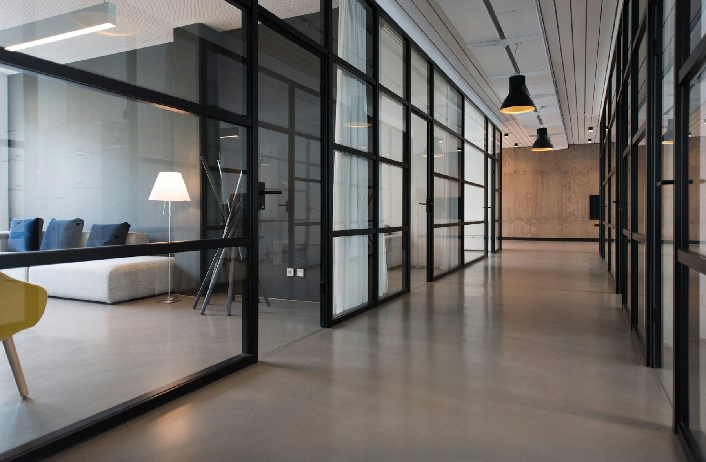

Clara Design Studio · Hamburg
Websites that feel light and keep working.
We design fast, accessible websites and sustainable content systems. With Plone, content, permissions and editorial workflows stay adaptable as organisations grow.

A good website keeps moving.
Clara designs more than the visible launch. We connect four responsibilities into a dependable content system.
- 01
Understand
Goals, people and existing content.
- 02
Structure
Language, journeys and ownership.
- 03
Design
Accessible components using real content.
- 04
Care
Measure, update and evolve with purpose.
Four perspectives. One publishing path.
Each service has a distinct role. Together they keep content useful over time.
Strategy & structure
We align goals, audiences, content and editorial ownership before turning them into pages and components.
↗Web design
We create accessible interfaces from the needs of visitors and editorial teams.
↗Plone & CMS
Secure roles, structured content and verifiable workflows create editorial independence.
↗Care & evolution
Regular care keeps technology, design and content adaptable together.
↗Websites for work that matters in public.
Fictional projects, real requirements.
Sustainable content management means:
Structure content well once, maintain it responsibly and reuse it across many journeys.
Our responsibilityNotes for the next useful step.
From our work across content, technology and responsibility.